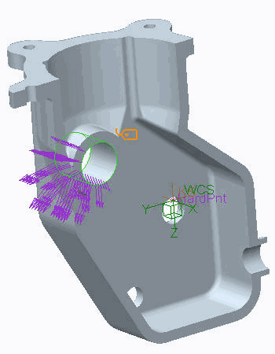

| 标记完成并返回 |
过程: 典型模拟过程练习
此示例展示了在准静态载荷下单一结构元件的简单而完整的模拟过程。当遇到此情况时，请记住使用模拟工作流作为指导准则。
此结构元件展示了一个由灰铸铁制成的特殊齿轮箱壳体。作用在齿轮箱上的轴的反作用力从单独的齿轮分析中已知。通过该分析以及几何的本质、约束和材料，我们推断此壳体可使用对称度进行分析。沿着对称平面切割模型可得到和分析完整模型相同的结果。此操作 (在可能情况下) 使分析比完整 3D 模型的分析所用时间更短。在此示例中，我们关注于找出脆弱的铸造壳体是否能经受这些承载反作用载荷。
“关闭窗口”(Close Window) “拭除未显示的”(Erase Not Displayed)
“拭除未显示的”(Erase Not Displayed) 
 Simulate_Analysis\TheTypSimProcess
Simulate_Analysis\TheTypSimProcess
 GEARBOX_HOUSING_SIMULATE.PRT
GEARBOX_HOUSING_SIMULATE.PRT
-
步骤 1. 打开并调查几何模型。
1. 对于 Creo Simulate 用户，请打开 GEARBOX_HOUSING_SIMULATE.PRT。修饰特征已被隐含，并且对称切割已在模型中完成并存储。
2. 对于 Creo Parametric 用户，请打开 GEARBOX_HOUSING.PRT。检查 CAD 几何并审阅模型树中隐含的修饰特征，而这不并影响模型的最大应力或变形值：
- 倒角标识 1645 和 4677
- 切口标识 5450 和倒圆角 2
另外，请注意，出于对称度的原因，外壳的一半会被切除。出于模拟目的而准备的模型应该看起来如图所示。
-
步骤 2. 调查模型属性。
1. 单击“文件”(File) > “准备”(Prepare) > “模型属性”(Model Properties)。将出现“模型属性”(Model Properties) 对话框。
2. 审阅用于创建模型的单位。了解模型的总尺寸是非常有用的，尽管如果设计者用质量驱动或力驱动单位来创建几何，它可能无关紧要。在此当前模型中，设计者使用力驱动单位制 (mm-N-sec)。
对于 Creo Simulate 用户，模型使用最初创建模型时所采用的单位制。
-
步骤 3. 定义材料。
1. 在“模型属性”(Model Properties) 对话框中，在“材料”(Material) 行上单击“更改”(Change)。将出现“材料”(Materials) 对话框。
2. 单击“文件”(File) > “新建”(New)。将出现“材料定义”(Material Definition) 对话框。
3. 完成图中所示字段，然后单击“保存到模型”(Save To Model) 关闭“材料定义”(Material Definition) 对话框并返回到“材料”(Material) 对话框。

4. 在“材料”(Material) 对话框中，单击“确定”(OK) 返回到“模型属性”(Model Properties) 对话框。
5. 在“模型属性”(Model Properties) 对话框中，单击“关闭”(Close)。
6. 在功能区中，选择“主页”(Home) 选项卡。
7. 在“材料”(Material) 组中单击“材料分配”(Material Assignment)
 。
。
8. 将出现“材料分配”(Material Assignment) 对话框。因为只有一个模型可用，单击“确定”(OK)。

材料属性值从工程参考列表中进行汇编。在系统的其他特性中，例如约束和几何尺寸，这些材料属性在建立结构刚度是至关重要。
-
步骤 4. 定义承载载荷。
1. 启用“坐标系显示”(Csys Display) 。
2. 模型中第一个更大的直径孔沿正向 Y 轴承受了 10000 N 大小的承载载荷以及沿正向 Z 轴 5800 N 的承载载荷。要定义此载荷，请在功能区中选择“主页”(Home) 选项卡。
3. 在“载荷”(Loads) 组中单击“承载”(Bearing)
 。将出现“承载载荷”(Bearing Load) 对话框。
。将出现“承载载荷”(Bearing Load) 对话框。
4. 从模型树中选择“孔标识 843”(Hole id 843)。在模型上，选择孔标识 843 特征的任何周期曲面。
5. 完成“承载载荷”(Bearing Load) 对话框，如图所示。
6. 单击“预览”(Preview) 以显示此载荷分布的图形表示，如图所示。
7. 在“承载载荷”(Bearing Load) 对话框中，单击“确定”(OK)。
8. 重复以上流程以根据定义将承载载荷元件分配给标识的孔：
- 孔标识 818 - Load2
- X=0
- Y=-3600
- Z=-1000
- 孔标识 792 - Load3
- X=0
- Y=5700
- Z=0
- 孔标识 818 - Load2
-
步骤 5. 定义模型约束。
1. 在功能区中，选择“主页”(Home) 选项卡。
2. 在“约束”(Constraints) 组中单击“位移”(Displacement)
 。将出现“约束”(Constraint) 对话框。
。将出现“约束”(Constraint) 对话框。
3. 选择如图所示的曲面。
4. 通过选择所显示的“自由平移”(Free Translation)
 释放 x 和 y 的平移自由度。单击“确定”(OK) 完成此约束的定义。
释放 x 和 y 的平移自由度。单击“确定”(OK) 完成此约束的定义。
5. 要为对称/切割曲面创建镜像切割约束，请在功能区中选择“主页”(Home) 选项卡。
6. 单击“约束”(Constraints) 组下拉菜单，然后选择“对称”(Symmetry) 。将出现“对称约束”(Symmetry Constraint) 对话框。
7. 选择图中所示的曲面作为对称约束的参考。
8. 在“对称约束”(Symmetry Constraint) 对话框中，单击“确定”(OK) 完成此约束的定义。
9. 在功能区中，选择“主页”(Home) 选项卡。
10. 在“约束”(Constraints) 组中单击“销钉约束”(Pin Constraint)
 。将出现“销钉约束”(Pin Constraint) 对话框。
。将出现“销钉约束”(Pin Constraint) 对话框。
11. 选择其中一个调整片孔的曲面，如图所示。
12. 在属性部分，为角度约束和轴约束选择“自由平移”(Free Translation)
。
13. 单击“确定”(OK)。
14. 重复以上流程，以将销钉约束分配给剩余的两个调整片孔，如图所示。
-
步骤 6. 使用 AutoGEM 工具创建有限元网格。
1. 在功能区中，选择“精细模型”(Refine Model) 选项卡。
2. 从 AutoGEM 组中单击AutoGEM
 。将出现 AutoGEM 对话框。单击“创建”(Create)。此流程要用数秒钟完成。
。将出现 AutoGEM 对话框。单击“创建”(Create)。此流程要用数秒钟完成。
可通过按照 Creo 应用程序中的常规动作旋转/平移/缩放模型来检查网格。
3. 单击“关闭”(Close) 以关闭所有对话框并当出现保存网格的提示时，单击“否”(No)。
-
步骤 7. 定义并运行静态分析。
1. 在功能区中，选择“主页”(Home) 选项卡。
2. 在“运行”(Run) 组中单击“分析和研究”(Analyses and Studies)
 。将出现“分析和设计研究”(Analyses and Design Studies) 对话框。
。将出现“分析和设计研究”(Analyses and Design Studies) 对话框。
3. 单击“文件”(File) > “新建静态分析”(New Static)。将出现“静态分析定义”(Static Analysis Definition) 对话框。
4. 键入分析名称和设置，如图所示。
5. 单击“确定”(OK)。
6. 要配置运行设置，请在“分析和设计研究”(Analyses and Design Studies) 对话框中单击“配置运行设置”(Configure Run Settings)
 。将出现“运行设置”(Run Settings) 对话框。
。将出现“运行设置”(Run Settings) 对话框。
7. 默认情况下，结果和临时输出目录被设置在工作目录中。本练习不需要对它们进行更改。单击“确定”(OK)。
8. 在“分析和设计研究”(Analyses and Design Studies) 对话框中单击“开始运行”(Start Run)
 以启动分析。
以启动分析。
9. 单击“是”(Yes) 以运行交互诊断。
10. 单击“显示研究状况”(Display Study Status)
 以监视运行状况。运行分析的时间可能会有所不同，但完成分析的时间不会超过 1 分钟。
以监视运行状况。运行分析的时间可能会有所不同，但完成分析的时间不会超过 1 分钟。
11. 分析完成后所显示的内容出现在汇总报告结尾。不要关闭任何对话框。
-
步骤 8. 查看汇总报告。
1. 仔细检查在汇总文件中显示的信息。注意模型上的合成载荷。还要注意最关心的数量、应力和变形的最大值。
2. 在“运行状况”(Run Status) 对话框和“诊断”(Diagnostics) 窗口中单击“关闭”(Close)。保持“分析和设计研究”(Analyses and Design Studies) 对话框处于打开状态。
-
步骤 9. 创建结果窗口并检查结果。
1. 在“分析和设计研究”(Analyses and Design Studies) 对话框中，选择刚完成的分析。
2. 单击“审阅结果”(Review Results)
 开始生成结果窗口。将出现“结果窗口定义”(Result Window Definition) 对话框。
开始生成结果窗口。将出现“结果窗口定义”(Result Window Definition) 对话框。
3. 要创建条纹图结果窗口，请完成对话框和“数量”(Quantity) 选项卡字段，如图所示。
4. 完成“显示位置”(Display Location) 字段，如图所示。
5. 完成“显示选项”(Display Options) 字段，如图所示。
6. 单击“确定并显示”(OK and Show) 显示结果。可在后处理器中按照 Creo Simulate 应用程序中的常规动作旋转/平移/缩放模型。
要停止动画，请单击“停止”(Stop)  。
。
7. 要显示由于承载载荷而在模型中产生的最大主应力，请单击“复制”(Copy)
 。
。
8. 自定义对话框内容和“数量”(Quantity) 选项卡，如图所示。
9. 自定义“显示位置”(Display Location) 选项卡，如图所示。
10. 自定义“显示选项”(Display Options) 选项卡，如图所示。
11. 单击“确定并显示”(OK and Show) 显示结果。
12. 调整图例以使最大值下面的值为 50 MPa。可通过选择“编辑”(Edit) > “图例值”(Legend Value) 完成此步骤。
13. 在图例中单击最大值下面的值。将出现“输入数据”(Enter data) 对话框。键入 50，然后单击“确定”(Ok)。
14. 出现提示时请单击“是”(Yes)。注意图中的应力值。旋转模型以查看高应力区域。
15. 单击“文件”(File) > “退出结果”(Exit Results) 退出并返回到 Creo Simulate 预处理界面。在系统询问您是否保存当前结果窗口时，单击“否”(No)。
过程就此结束。
| 标记完成并返回 |